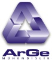
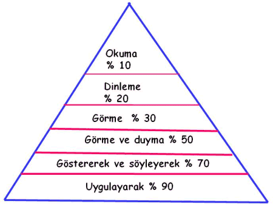
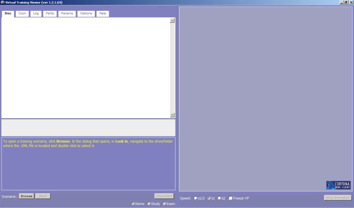
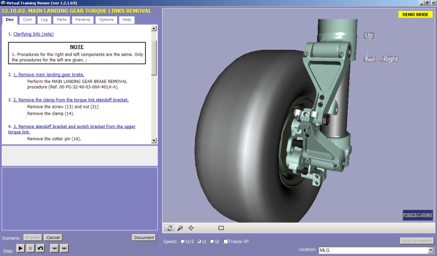
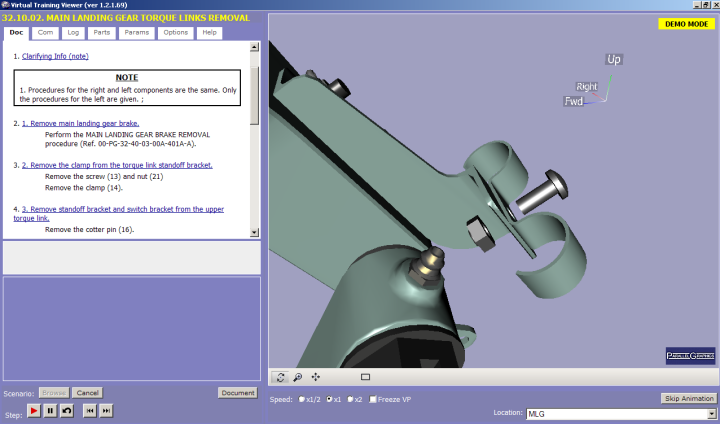

|
Ýnsanlýk tarihinin birbirinden önemli dönüþümlerinden birisi artýk sanayi toplumundan bilgi çaðýna geçiþ olmaktadýr. Bilgi çaðýnýn en belirgin özellikleri arasýnda, bilim ve hýzlý teknolojik geliþmeler sayýlabilir. Artan nüfus, hýzlý sektörel geliþmelere ayak uydurabilmek, gereksinimleri karþýlayýp zamanýnda cevap verebilmek, büyük iþ kitleleriyle kýsa zamanda kesintisiz iletiþim kurma gereðini doðurmaktadýr. Çaðdaþ ve geliþmiþ toplumlarýn düzeyleri, ürettikleri bilim ve teknolojiyle ölçülmektedir. Bu da ancak hýzlý ve zamanýnda gerçekleþtirilen eðitim ile saðlanmaktadýr.
Dünyada, yeni iletiþim teknolojilerinin varlýðý ile geleceðin eðitim yöntemi diyeceðimiz her alanda uygulanmaya baþlayýp, ihtiyaçlara cevap verebilecek "sanal eðitim" uygulamalarý baþlatýlmýþtýr. Sanal eðitim gözle görülebilen her türlü iç ve dýþ mekanýn, sistemlerin, etkinliklerin bilgisayar ve internet ortamýnda etkileþimli olarak aþaðý, yukarý, saða sola ve öne arkaya olmak üzere 360 derecelik 3 boyutlu bir açý ile izlenmesini saðlayan bir uygulamadýr. Böylece kendinizi izlediðiniz görüntünün tam ortasýnda ve o aný yaþýyormuþ gibi hissedebilirsiniz.
Sanal eðitim ayný zamanda bireylerde öðrenmeyi kolaylaþtýrabilecek unsurlarý da kapsamaktadýr. Öðrenme üçgeninde de görüldüðü gibi görsel, uygulama, sesli kayýt, dinleme, müzikle öðretme yöntemleri sanal eðitim içeriðinde yer almakta ve öðrenmedeki yüzdelik baþarýyý artýrmaktadýr.

Öðrenme Üçgeni
Eðitimde meydana gelen geliþmeler ile birlikte sanal eðitim portallarý inþaat, mimari, dekorasyon, makina, imalat, havacýlýk, teknik servis, týp gibi bir çok sektörde hizmet vermeye baþlamýþtýr. Bu sektörlerden bir tanesi de þüphesiz hýzla geliþme gösteren üretim sektörüdür. Üretim sektöründeki hýzlý geliþmeler beraberinde bir çok teknolojik yeniliði ve en önemlisi etkili iletiþimi mecbur hale getirmiþtir. Ýþletmelerin, bu yeni teknolojiye uyum saðlamalarý ve yapacaklarý iþleri en kýsa sürede ve eksiksiz bir þekilde yerine getirebilmeleri için bu yeni teknolojilerin nasýl kullanýlacaðýna dair eðitim ihtiyacý doðmaktadýr. Bu ihtiyaç geleneksel yöntemlerle karþýlanabileceði gibi, þu an mevcut olan bilgisayar teknolojisini de kullanarak karþýlanabilir.
Sanal eðitimin uygulamaya hýzlý bir þekilde girmesi ile sanal eðitim portallarýnýn hazýrlanmasý için gerekli yazýlýmlar geliþtirilmeye baþlanmýþtýr. Sanal eðitim yazýlýmlarýndan bir tanesi Parallel Graphics firmasýnýn geliþtirip, çalýþmalarýný yaptýðý "Cortona" yazýlýmýdýr.
Cortona programý interaktif çalýþma ortamý saðlayan, editörü tarafýndan prosedürleri ve senaryolarý kolayca hazýrlanan ve yayýnlandýktan sonra kolay bir þekilde kullanýcý hizmetine sunulan, ses ile desteklenebilen görselliði oldukça zengin bir programdýr. Programla sanal dünyanýn programlama dili olan VRML (Virtual Reality Modeling Language) formatýndaki veriler kullanýlarak çok küçük data boyutlarýyla çok büyük iþler yapýlabilmektedir.
Hazýrlanan teknik eðitimler, programýn kullanýþlý arayüzü ile üç aþamalý çalýþma þeklinde kullanýcýnýn hizmetine sunulmaktadýr. Bu aþamalar sýrasýyla Demo (Gösteri), Study (Uygulama) ve Exam (Sýnav) aþamalarýdýr.
Ýlk aþama olan demo (gösteri) aþamasý, eðitim aþamalarýný sýrasý ile gösterir ve eðitimin öncelikli olarak anlaþýlmasý amacýný taþýr.
Temelde izleyicinin çalýþma ekraný iki ana bölümden oluþmaktadýr. Bu bölümlerden bir tanesi görsel ekran olarak adlandýrýlan, hazýrlanan eðitim simülasyonunun izlendiði ve verilmesi gereken çok önemli mesajlarýn alýndýðý bölümdür. Ýkinci bölüm ise eðitimin izlenmesi sýrasýnda eðitimciye sözel olarak verilmesi gereken birtakým talimatlarýn, iþ aþamalarýnýn, mesajlarýn, parça listelerinin , dokümanlarýn verildiði mesaj ve talimatlar ekranýdýr.

Ýzleyici Ekranýnýn Genel Görüntüsü
Eðitim seçimi yapýldýktan sonra demo aþamasýnda, görsel ekranda eðitim adým adým izlenir.
Örneðin bir sistemin montaj eðitiminde; parçalarýn (montaj regalinden alýnýp) montaj masasýna konulmasý, parçanýn yerine takýlmasý, montajý yapýlýrken kullanýlacak el aletinin seçilmesi, el aletinin kullanýlmasý, parçalarýn yaðlanmasý, vidalarýn takýlmasý, sökülmesi gibi yapýlmasý gereken tüm montaj veya demontaj adýmlarý hareketli, göze hitap eden, renklendirilmiþ ortamda izlenir. Eðitim adýmlarýnýn hýzý kullanýcý tarafýndan ayarlanabilir. Ýzleme aþamasýnda eðitimi alan kiþiye, dikkat etmesi özellikle öðrenmesi istenilen noktalar renkli, puntolu yazýlarla mesaj olarak gösterilip okunmasý saðlanýr. Yine ilave mesaj diyalog kutularý ile eðitimi alan kiþinin dikkati önemli noktalarda çekilebilir. Bunun yanýnda her adým için eðitimi alan kiþiye verilmesi gereken talimatlar,teknik bilgiler,ortam bilgileri, makina teçhizat bilgisi, kullanýlacak alet bilgisi, prosedürler, ek bilgiler vb. mesaj ve talimatlar ekranýnda yazýlý olarak verilir.


|